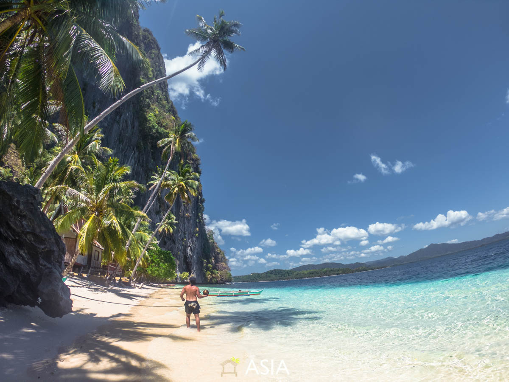
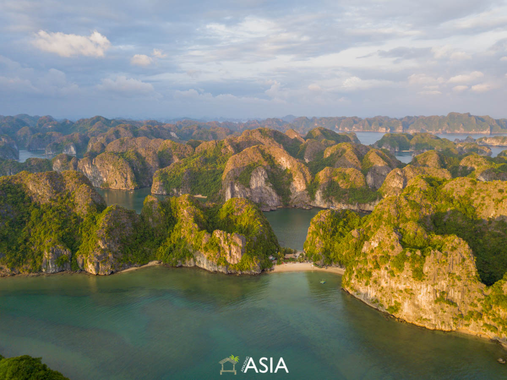
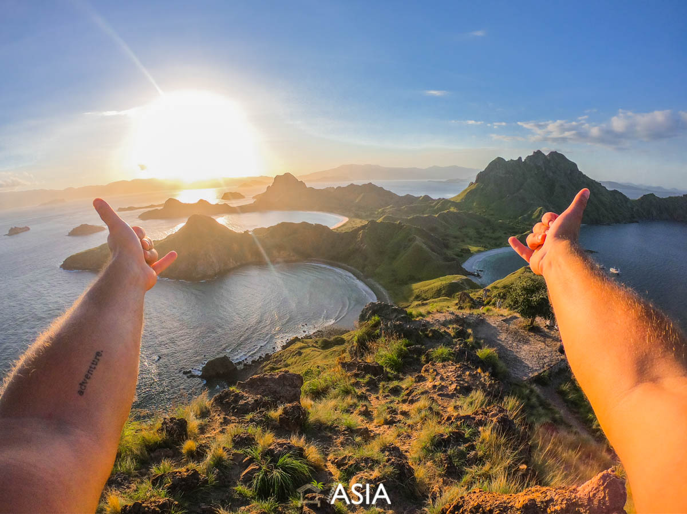
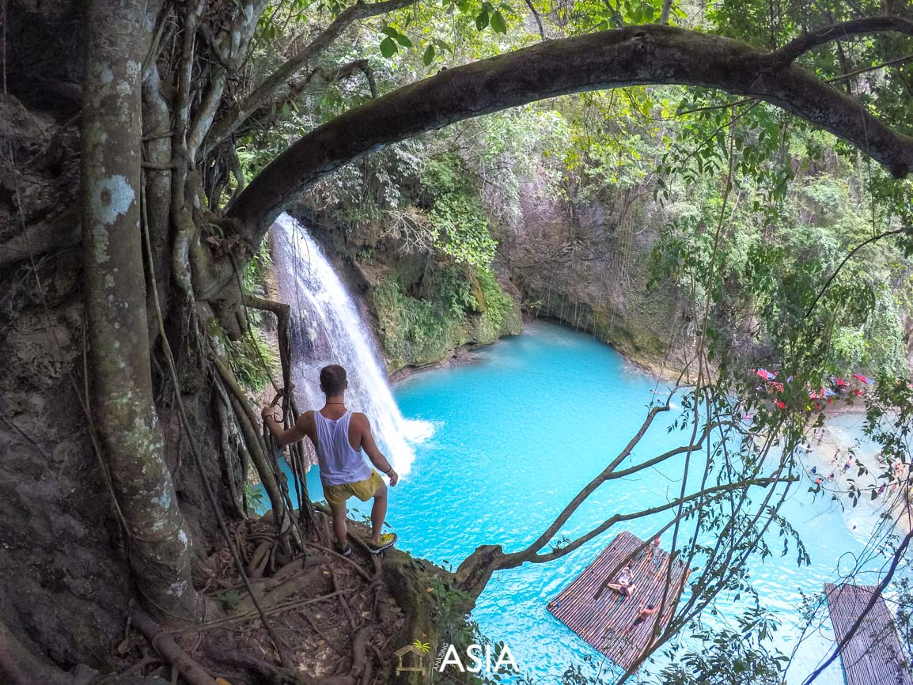

Miejsca warte odwiedzenia
Archipelag Bacuit - Palawan, Filipiny
Archipelag Bacuit znajduje się na wyspie Palawan i jest jednym z największych skarbów Azji, jeśli nie świata. Piaszczyste białe plaże otoczonymi błękitnymi wodami, lasami kokosowymi, dziewicze wyspy porośniętymi dżunglą, tętniące życiem rafy koralowe, urocze zatoczki, jaskinie i sekretne laguny - wszystko to oferuje Archipelag Bacuit. Bazą wypadową na archipelag jest El Nido, skąd codziennie, wypływają bangki (tradycyjne filipińskie łodzie) na tzw. island hopping, czyli pływanie od wyspy do wyspy.
Zatoka Lan Ha - Wietnam
Zatoka Lan Ha składa się z ponad 300 wysepek skalnych i 139 plaż. Większość plaż znajduje się pomiędzy wysokimi wapiennymi górami, dzięki czemu ma się poczucie odosobnienia gdzieś na jednej z setek wysepek Morza Południowochińskiego. Zatoka jest spokojniejszym miejscem niż zdecydowanie bardziej zatłoczona siostrzana zatoka Ha Long. Zatokę Lan Ha można odkrywać jedynie łodzią. Oprócz niesamowitych, naturalnych widoków znajdują się tam również pływające wioski rybackie.
Park Komodo - Indonezja
Park Komodo składa się z 3 dużych wysp: Komodo, Rinica i Padar, oraz dziesiątek mniejszych wysepek. Ten iście niebiański rejon, przypominający nieco Jurrasic Park, poszczycić się może pięknymi, dziewiczymi plażami oraz jednymi z najlepszych na świecie warunków do nurkowania. Można tutaj bez problemu spotkać olbrzymie manty. Jest to również jedyne miejsce na ziemi, gdzie podziwiać można żyjące na wolności smoki z Komodo, czyli największe jaszczurki świata. Park można odkrywać jedynie łodzią.
Wyspa Cebu - Filipiny
Jeszcze do niedawna, turyści na Cebu przylatywali jedynie po to, aby zanurkować z rekinem wielorybim w morzu. Obecnie, ciężko powiedzieć co bardziej przyciąga turystów: rekiny czy bujna dżungla i góry, które skrywają wiele niesamowitych wodospadów oraz kanion w Badian, inaczej kanioning albo canyoneering. Jest to naturalna atrakcja, która polega na pokonaniu kanionu. Na drodze spotykasz liczne przeszkody, które pokonujesz w rozmaity sposób: skaczesz z wodospadów, skaczesz ze skał, pływasz, maszerujesz, moczysz się i brudzisz.